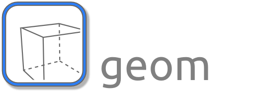
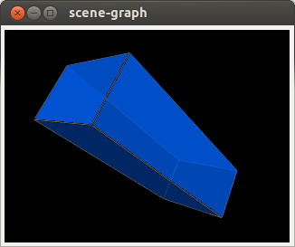

3D Vision and Visualization¶
The ICLGeom module provides algorithms for 3D computer-vision, point cloud processing and 3D visualization. Its components are tightly integrated and optimized for simplicity and usability. Simplicity means, that no 3rd party libraries except for OpenGL for the visualization are needed. The 3D vision framework’s main class is geom::Camera, which represents a idealized pinhole camera defined by extrinsic and intrinsic parameters. The camera is not only used for 3D vision and camera calibration, but also for visualization tasks. For this, the ICLGeom package provides a lightweight scene graph implementation that basically consists of the geom::Scene class and a hierarchical geom::SceneObject class. The scene’s rendering callback can simply be linked to a qt::ICLDrawWidget3D GUI component, which solves the issued for rendering pixel-accurate 3D overlay on top real camera images.
In addition we also provide the PointCloudObjectBase class, which defines a generic interface for point cloud representations. Even though also a very basic fallback point cloud type PointCloudObject is provided, we strongly recommend to use the Point Cloud Library (PCL) for point cloud processing. For a seamless integration with the Point Cloud Library, ICL provides the adapter class template PCLPointCloudObject, which is compatible to our PointCloudObjectBase interface while providing direct access to the actual PCL point cloud type. By these means, PCL point cloud instances can easily be visualized as part of a Scene.
Table of Contents¶
The Camera class¶
The Camera class is the central part of the ICLGeom module. It defines a connection between camera calibration and 3D visualization. The fundamental camera calibration function Camera::calibrate estimates optimal camera parameters for a given set of 2D-3D point correspondances and returns a Camera instance. The identical camera class is also used by the Scene class for visualization. Camera instances can easily be saved and loaded from XML files.
The Camera is completly compatible to the OpenGL camera model. It is parameterized by following sets of parameters.
- extrinsic parameters
- position
- view vector
- up vector [1]
- intrinsic parameters
- focal length [2]
- horizonal and vertical pixel density of the camera chip [pix/mm]
- horizonal and vertical offset of the camera principal point
- the skew
- rendering parameters
- chip size [pix]
- far clipping distance [mm]
- viewport size (usually equals chip size) [pix]
- minimum and maximum z-value (for the depth-buffer resolution)
Please refer to the API documentation of the Camera class for more details of the camera’s projection model.
| [1] | The up-vector points downwards for compatibility with |
| [2] | The focal lenght and the pixel densities are internally multiplied, but we provide two sets of parameters for clarity |
Todo
add further camera class features such as estimate_3D and Co.
Camera Calibration¶
Camera calibration is a important prerequisite for many computer vision applications. In contrast to most other libraries, we explicitly distinguish between
- parameter estimation for image undistortion
- finding intrinsic and extrinsic parameters of our idealized camera model
Even though, there are methods for joint estimation of both, image undistortion and camera parameters, we decided to provide separate tools for these tasks in order to keep things as simple as possible. Image undistortion is assumed to be performed pixel-wise on acquired images. For this, ICL’s main image source interface io::GenericGrabber provides methods to enable automatic image undistortion. If this is done, the grabber instance will automatically return undistorted images. By these means, image undistortion is completely decoupled from the linear/project geometry camera model.
Since camera calibration is a very important topic for many applications, we dedicated a whole camera calibration How-To to this. Please see Camera Calibration
The Scene Graph¶
ICL provides a simple light-weight scene graph implementation, that can be used for 3D visualization. A Scene instance is simply filled with Camera and SceneObject instances. For each contained camera, it can provide an OpenGL callback function that simply renders the whole scene from the camera’s point of view. The callback function can easily be linked to an qt::ICLDrawWidget3D display component that can render the scene on top of an image background. For user interactions such as mouse-based scene navigation, another callback mechanism is provided. All synchronization issues are already solved internally, in particular the whole scene is only rendered in the application’s GUI-thread, which is necessary due to OpenGL’s lack of thread-safety.
|
 |
Additionally, the Scene class provides a simple OpenGL-based off-screen rendering method Scene::render, that can be used to simply render a whole scene into an image. It also allows for extracting the scene’s depth buffer, which can be used for simulating depth-cameras. The are several demo applications, that demonstrate the uses of ICL’s Scene class:
icl-offscreen-rendering-demo
Combines off-screen rendering with textures. ICL images can easily be used as textures. In this demo, a simple cube that can be rotated by mouse is rendered twice, first into a normal OpenGL-context (qt::ICLDrawWidget3D) and second, off-screen rendering-based, into an core::Img8u. The resulting image is then used for the cube’s face textures. The resulting application reveals a beautiful recursive visualization
icl-sceen-graph-demo
Draws a very simple solar system in order to demonstrate the use of an object tree as scene graph. Off-screen rendering is also demonstrated here.
icl-animated-grid-demo
Demonstates the use of the texture-grid primitive (see SceneObject::addTextureGrid), that can be used to spread a texture along a deformable 2D grid in 3D space. It also demonstrates the use of the qt::GLFragmentShader that can easily be attached to SceneObject instances.
The SceneObject Class¶
The SceneObject defines an interface for visual elements in the scene. For the creation of visual content, it can either be filled with vertices, normals, and visual primitives such as lines, triangles and textures, or it’ SceneObject::customRender method can be overwritten in order to execute OpenGL-code directly. This code is then automatically rendered by the parent scene, synchronously to the application’s GUI thread. Only if a scene object is heavily [3] adapted by the application’s working thread, its locking property needs to activated and it must be locked explicitly during the adaption:
Each SceneObject instance has a transformation matrix, that defines it relative position, orientation, scale and shear relative to the parent object. Each scene objects is able to carry a list of child-objects, which represents the actual scene graph. SceneObject instances that are directly added to the Scene are top-level objects and have a null-parent.
The default SceneObject representation mirrors the basic idea of the Wavefront .obj file format [4]. It contains a list of vertices and normals, that are reference by a set of different primitives (represented by the Primitive class). A simple line-primitive is defined by two vertex indices that reference the line’s start and end vertex in the object’s vertex list. More complex primitives, such as triangles, polygons or even textures have more parameters, but most of them directly reference the object’s vertices and normals. The Primitive interface can also be customly implemented. In the primitives render method Primitive::render, all parent object data is available.
Additionally, the SceneObject class provides a huge set of utility methods and factory functions for easy creation default objects, such as cubes or spheres. For objects, also a ray-casting method is provided. The Scene’s Scene::findObject method yields a list of objects at a given mouse-position or along a given view ray. An exact intersection position is also provided.
| [3] | heavily means that e.g. vertices or primitives are added or removed. |
| [4] | see http://en.wikipedia.org/wiki/Wavefront_.obj_file |
Using the SceneGraph to Render an Image Overlay¶
Together with ICL’s camera calibration capabilities (see Camera Calibration), it is possible to use the scene graph to render a virtual scene as an image overlay (on top of a real image). This can be achieved by the following steps:
- Given a real camera device, the camera is calibrated, resulting in an xml-description file of extrinsic and intrinsic camera parameters (e.g. called myCalib.xml).
- If the camera shows significant lens distortion, it is recommended to also find appropriate lens distortion compensation parameters (see Image Undistortion (Lens distortion correction)), also resulting in an xml-file (e.g. called udist.xml)
- In the program, create a geom::Scene instance
- Add virtual objects to the Scene
- A add a geom::Camera instance to the scene
- Create an image display component that can also render 3D stuff (qt:Draw3D)
- Link the visualization callback of the scene to the GUI component
- Grab background images and also pass them to the GUI component
In this case, ICL’s rendering pipeline will ensure, that virtual and real objects align perfectly even when adapting the GUI component’s geometry or when zooming.
For an example, please refer to this tutorial: 3D Marker-Detection and Rendering 3D Scene Overlays
Point Cloud Processing¶
Note
This part of ICL is still under development, however, we think that our basic interface will stay as it is. We plan to add more features for point cloud IO and processing soon
Since the availability of the Microsoft Kinect Camera, 3D point-cloud processing has become a very popular subject in computer vision. ICL defines only a very simple an general point cloud interface (PointCloudObjectBase). In addition, two alternative point cloud types are provided, that implement this interface:
The PointCloudObject is just fallback implementation, that does only support very simple point cloud types providing XYZ and RGBA data. We strongly recommend to use the Point Cloud Library (PCL) for any point cloud processing. New point cloud processing algorithms should also be based on PCL’s point cloud type, or they can be implemented by working on the PointCloudObjectBase interface. The PCLPointCloudObject shallowly wraps a PCL point cloud instance, working as adapter between ICL’s scene and visualization engine and PCL’s point cloud processing algorithms
The PointCloudGrabber Interface¶
Just like the io::Grabber interface for common image acquisition, we provide a very simple point cloud acquisition interface geom::PointCloudGrabber. In contrast to the Grabber, this interface is hold as simple as possible, by defining just a single pure virtual image acquisition method PointCloudGrabber::grab. The idea of this method differs significantly from the io::Grabber::grab method, by not providing any return value. PointCloudGrabber::grab simply acquires new point cloud data using its back-end implementation and then transforms all acquired features that are also available in the given destination point cloud instance into it. The whole data handling is left to the caller scope.
Note
We also plan to create a io::GenericGrabber-like interface for point clouds soon
The DepthCameraPointCloudGrabber Class¶
So far, only a single implementation of the PointCloudGrabber interface is available. The DepthCameraPointCloudGrabber uses common io::GenericGrabber instances for acquiring depth- and optionally also corresponding color-images. The image sources can be any supported io::GenericGrabber-backend. Therefore, the DepthCameraPointCloudGrabber can already be used to acquire point clouds from
- Kinect using the libfreenect backend
- Kinect and other PrimeSence base defines using the OpenNI backend
- depth and color image files
- RSB-based network streams
- Shared-memory streams
Note
A .pcd-file point cloud grabber is already implemented, but still needs to be included